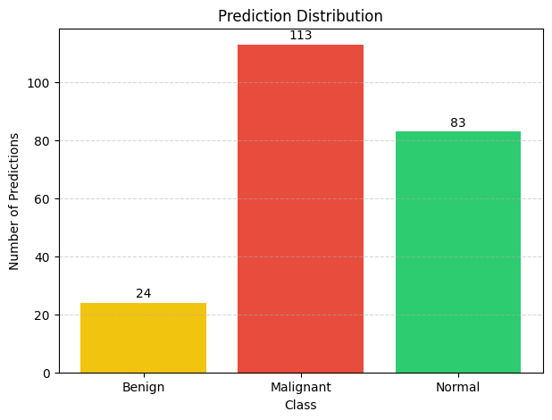
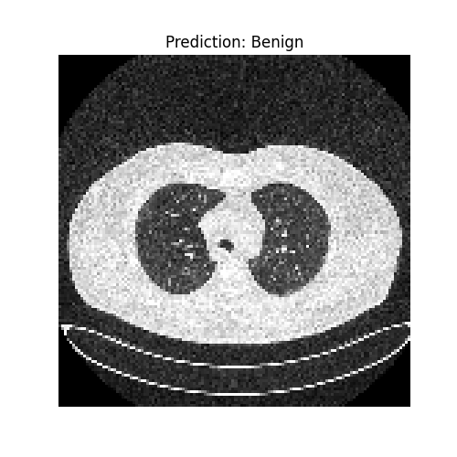

Problem Framing
The project studies how convolutional neural networks can learn visual patterns from lung CT scan images and classify them into clinically meaningful categories in a controlled dataset experiment.
Medical Imaging Case Study
A proof-of-concept deep learning project that classifies lung CT scan images into normal, benign, and malignant categories using image preprocessing, CNN modeling, evaluation, and result visualization.
Project Overview
The project studies how convolutional neural networks can learn visual patterns from lung CT scan images and classify them into clinically meaningful categories in a controlled dataset experiment.
IQ-OTH/NCCD Lung Cancer Dataset with normal, benign, and malignant CT images.
Dataset Link: KaggleImages are converted to grayscale, resized to 128 x 128, normalized, and split for training/testing.
Sequential CNN architecture with convolution, pooling, dense, dropout, and output layers.
Tools Used
The project combines computer vision preprocessing, deep learning model training, classification evaluation, and portfolio presentation.
Dataset Source
The CT scan data used in this project comes from the IQ-OTH/NCCD lung cancer dataset, available on Kaggle with normal, benign, and malignant CT image categories.
Workflow
Organize class folders, load CT images, and handle unreadable files safely.
Convert to grayscale, resize images, normalize pixel values, and prepare labels.
Build binary and multi-class CNNs, train them, and save reusable Keras models.
Review accuracy, loss curves, classification reports, confusion matrix, and predictions.
Model Results
These visuals summarize the current dataset split and support project interpretation. They should be read as proof-of-concept results, not clinical performance claims.

Shows how model accuracy changed across epochs during the experiment.

Shows how loss changed as the CNN fit the training data and validation split.

Compares true and predicted labels for benign, malignant, and normal scans.

Highlights how predictions were distributed across the three target classes.

Example visualization of a CT image classified as normal by the trained model.

Example visualization of a CT image classified as benign by the trained model.

Example visualization of a CT image classified as malignant by the trained model.
Key Takeaways
Shows the process of transforming raw CT images into model-ready tensors.
Implements binary and multi-class classification workflows using Keras.
Uses loss curves, accuracy curves, confusion matrix, and prediction examples.
Positions the project as a learning and portfolio experiment, not a diagnostic tool.
Responsible AI Note
This project is designed for portfolio and educational demonstration. Results are based on a dataset-specific train-test split and do not include external validation, patient-level splitting, clinical testing, or deployment safeguards. The model should not be used for medical decision-making.
Project Repository
Review notebooks, saved models, plots, and documentation in the GitHub repository.
Open GitHub Repository